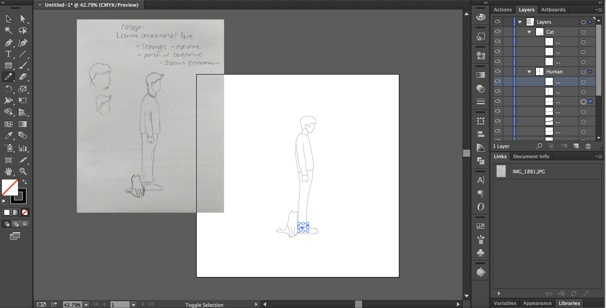

#the100dayproject
On September 5th, I decided to try my hand at the #the100dayproject, an online campaign that encourages folks to dedicate themselves to a creative craft for one hundred days. I decided I wanted to improve my visual design skills, so I created illustrations for 3.5 months and finished on December 25th, 2015.
See My Illustrations
Process
Admittedly, balancing responsibilities meant I couldn't spend too much time on each illustration. However, as I was eager to improve, I allocated - on average - an hour to think of an idea and illustrate it. If time permitted, I'd sketch on my notebook, go through a few iterations, and then move on to Illustrator. From there, I'd either trace out an iteration (if it were good enough) or simply reference my sketches.
If I traced any sketches, as I did in this particular example, I'd spend lots of time adjusting paths.

In this example, I spent time shortening the head; extending the arm length; modifying the look of the sweater; adjusting the legs and feet; and redirectioning the cat.
I then made the artistic decision to adjust the brush strokes. This was done to follow a design decision I had made earlier. The free form brush strokes manifest a very human visual and emotion - imperfect standalone yet complete together.
Each design, of course, varied in terms of process; but as an invariant, I certainly learned a new skill with each design.
Takeaways
- If you can, spend an hour thinking and planning out what you want to create. It takes a lot of thought to create illustrations directly from your imagination, and drawing first helps.
- On the flip side, if you don't have time, don't panic. Putting time constraints on yourself can also be beneficial. A good friend of mine once told me that one's best, most creative work comes when they are most constrained.
- I use(d) reference images way too much. I now understand the difference between an expert and amateur visual designer: the ability to imagine details and draw them from your and others' experiences.
- Do this with a friend! I had the pleasure of embarking on the journey that is #the100dayproject with my good friend, Wendy Xue. It made it easier to hold myself accountable and provided a channel to receive honest, critical feedback. Check out Wendy's work here.